Lecture 8 — Part 3.2 CNN Architectures & Transfer Learning
Lesson 7 ให้ชิ้นส่วนของ CNN คือ convolution, pooling และการนับ parameter บทนี้เอาชิ้นส่วนเดิมมาตอบสามคำถาม: สถาปัตยกรรมดังแต่ละตัวแก้ปัญหาอะไร, เอาโมเดลที่เทรนแล้วมาใช้กับงานเราอย่างไร และถ้าเลิกใช้ convolution จะได้อะไร ทุกการคำนวณในบทใช้สองสูตรเดิม: ขนาด output \(\lfloor (n+2p-f)/s \rfloor + 1\) และ parameter \((f \cdot f \cdot n_C + 1) \cdot n_C'\)
| คำถาม | คำตอบสั้น | อ่านที่ |
|---|---|---|
| LeNet, AlexNet ต่างกันอย่างไร | AlexNet คือ LeNet ที่ลึกและกว้างขึ้น ใช้ ReLU, dropout, augmentation | ตอน 1 |
| VGG กับ Inception แก้อะไร | VGG ใช้ 3×3 แบบเดียวทั้ง network · Inception ใช้หลายขนาดพร้อมกัน และ 1×1 ลด depth | ตอน 2 |
| ResNet ทำให้ลึก 152 ชั้นได้อย่างไร | skip connection: \(h(x) = f(x) + x\) gradient มีทางลัด | ตอน 3 |
| CNN รุ่นใหม่เน้นอะไร | ประสิทธิภาพ: separable conv, dense connection, compound scaling | ตอน 4 |
| transfer learning ทำอย่างไร | สามแนวทาง สี่ scenario และโค้ด VGG16 แยกสุนัขกับแมว | ตอน 5 |
| ViT กับ Swin ต่างจาก CNN อย่างไร | ตัดภาพเป็น patch แล้วใช้ self-attention · Swin จำกัดใน window | ตอน 6 |
| ILSVRC | ImageNet Large Scale Visual Recognition Challenge แข่งจำแนกภาพ 1,000 class |
| top-5 error | สัดส่วนภาพที่ class จริงไม่อยู่ใน 5 อันดับแรกที่โมเดลทาย · top-5 accuracy = 100% − top-5 error |
| weight layer | layer ที่มี parameter ให้เรียน คือ CONV และ FC · pooling ไม่นับ |
| pretrained model | โมเดลที่เทรนบน dataset ใหญ่เสร็จแล้ว มี weight พร้อมใช้ |
| freeze | ล็อก weight ไม่ให้อัปเดตระหว่างเทรน คือ trainable = False |
ทุกปีมีการแข่งจำแนกภาพ 1,000 ชนิด ผู้ชนะแต่ละปีแก้จุดอ่อนของผู้ชนะปีก่อนหนึ่งเรื่อง อ่านประวัติ CNN ก็คืออ่านว่าแต่ละปีแก้เรื่องอะไร
| สถาปัตยกรรม | สิ่งที่แก้หรือพิสูจน์ | ตอน |
|---|---|---|
| LeNet | convolution ใช้ได้จริง | 1.2 |
| AlexNet | CNN ลึก + ReLU + GPU + augmentation | 1.3 |
| VGG | บล็อก 3×3 ซ้ำกันทั้ง network | 2.1 |
| Inception | หลายขนาด filter พร้อมกัน + 1×1 bottleneck | 2.2 |
| ResNet | skip connection ทำให้ network ลึกมากเทรนได้ | 3 |
| MobileNet · EfficientNet · ConvNeXt | ประสิทธิภาพ · scale อย่างมีหลัก · CNN ที่ได้แรงบันดาลใจจาก Transformer | 4 |
ImageNet คือ benchmark มาตรฐานของการจำแนกภาพ แข่งช่วงปี 2010–2017 ปี 2012 มีภาพ 1.2 ล้านภาพขนาด 224×224×3 แบ่ง 1,000 class บาง class ต่างกันน้อยมาก เช่นสุนัข 120 สายพันธุ์ ภายในหกปี top-5 error ลดจากเกิน 26% เหลือต่ำกว่า 2.3%
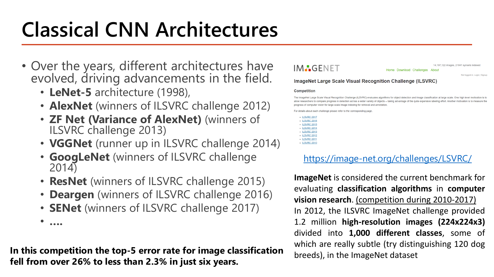
รายชื่อบนสไลด์ไล่ตามปี: LeNet-5 ปี 1998 ก่อนมีการแข่ง, AlexNet ชนะ 2012, ZF Net ชนะ 2013, VGGNet ได้ที่สองปี 2014, GoogLeNet ชนะ 2014, ResNet ชนะ 2015, Deargen ชนะ 2016 และ SENet ชนะ 2017
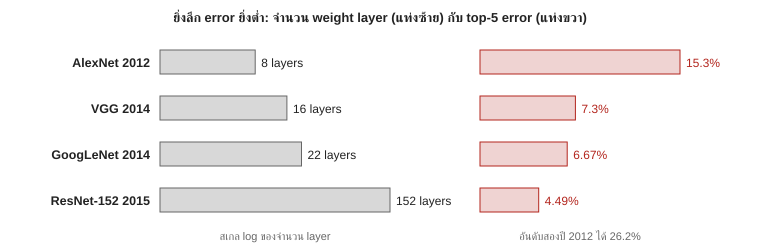
แท่งซ้ายยาวขึ้นทุกรุ่น แท่งขวาสั้นลงทุกรุ่น ข้อสอบชอบจับคู่ตัวเลขสองชุดนี้: AlexNet 8 กับ 15.3%, VGG 16 กับ 7.3%, GoogLeNet 22 กับ 6.67%, ResNet-152 152 กับ 4.49%
VGGNet เป็นแค่ runner up ปี 2014 ผู้ชนะปีนั้นคือ GoogLeNet
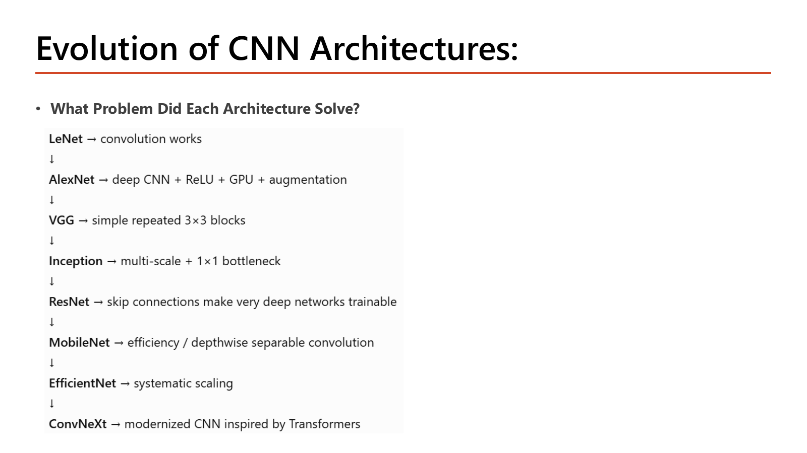
ก่อน LeNet วิธีปกติคือป้อน pixel ทุกตัวแยกกันเข้า network ใหญ่ LeNet ใช้ filter ตัวเล็กเลื่อนหา pattern ทั่วภาพแทน
LeNet-5 คือ สถาปัตยกรรม CNN ที่ รู้จักกันแพร่หลายที่สุด ใช้กับ MNIST มี 5 weight layer คือ 3 CONV + 2 FC ใช้ average pooling และ tanh ข้อค้นพบหลัก: convolution สกัด feature เชิงพื้นที่ ที่กระจายทั่วภาพได้ ได้ accuracy เกิน 99% แต่ MNIST ง่ายมาก เพราะเป็น grayscale และมีแค่ 10 class
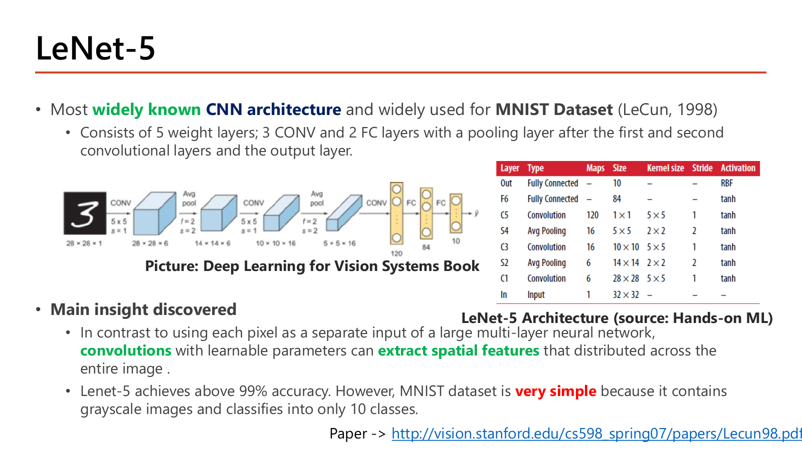
ตารางบนสไลด์ใช้ input 32×32 padding valid ทุกชั้น ขนาดจึงเป็น 32 → 28 → 14 → 10 → 5 → 1 ถ้าเริ่ม 28×28 กับ padding same ในชั้นแรกก็ได้ 28 เหมือนกัน ตัวเลขด้านล่างนับ parameter ทุกชั้น
CONV1 6 filter 5×5: (5·5·1 + 1)·6 = 156 · CONV2 16 filter 5×5 บน 6 channel: (5·5·6 + 1)·16 = 2,416 · CONV3 120 filter 5×5 บน 16 channel ได้ 1×1×120: (5·5·16 + 1)·120 = 48,120 · FC 84: 120·84 + 84 = 10,164 · output 10: 84·10 + 10 = 850 · รวม 61,706 ราว 62,000
accuracy 99% บน MNIST ไม่ได้บอกว่าโมเดลใช้กับภาพจริงได้ และ LeNet ใช้ tanh กับ average pooling ไม่ใช่ ReLU กับ max pooling
AlexNet คือ LeNet ที่ขยายทุกทาง: ชั้นมากขึ้น filter มากขึ้น ข้อมูลมากขึ้น แล้วใช้ GPU เทรน
AlexNet คือ LeNet-5 ที่ ลึกกว่า คือมี hidden layer มากขึ้น และ ใหญ่กว่า คือมี filter ต่อ layer มากขึ้น ชนะ ILSVRC 2012 ด้วย top-5 error 15.3% ขณะที่อันดับสองได้ 26.2% เป็น network "ลึก" ตัวจริงตัวแรกสำหรับวงการ computer vision มี 60 ล้าน parameter และ 650,000 neuron
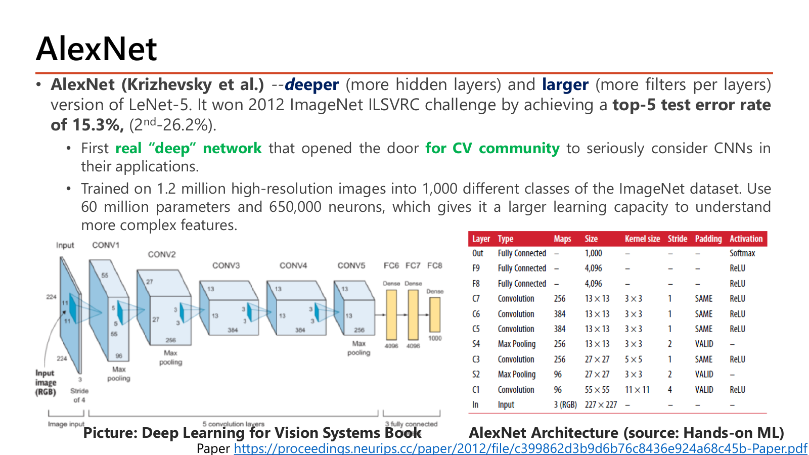
คอลัมน์ Size ของตารางลดเป็น 227 → 55 → 27 → 13 → 6 คำนวณด้วยสูตรขนาด output ทีละขั้น และ dense ชั้นแรกกิน parameter มากกว่าครึ่งของทั้งโมเดล
C1 96 filter 11×11 stride 4 valid: ⌊(227 − 11)/4⌋ + 1 = 55 · parameter (11·11·3 + 1)·96 = 34,944 · max pool 3×3 stride 2: ⌊(55 − 3)/2⌋ + 1 = 27 · C3 same คง 27 แล้ว pool ได้ 13 · C5–C7 same คง 13 แล้ว pool ได้ 6 · flatten 6·6·256 = 9,216 · F8 dense 4,096: 9,216·4,096 + 4,096 = 37,752,832 มากกว่าครึ่งของ 62 ล้าน
AlexNet ลึกกว่า LeNet คือมี 8 weight layer: 5 CONV + 3 FC เทคนิคใหม่ที่ทำให้ลึกได้:
| เทคนิค | แก้อะไร |
|---|---|
| ReLU | บรรเทา vanishing gradient เมื่อเทียบกับ sigmoid หรือ tanh ดู Lesson 5 |
| dropout, data augmentation, L2 regularization | สามเทคนิคเพื่อ เอาชนะ overfitting |
| local response normalization · GPU GTX 580 สองตัว | เร่ง convergence · ลดเวลาเทรน |
| ซ้อน conv ติดกัน C5, C6, C7 | ตัวแรกที่ไม่วาง pooling หลังทุก conv |
ข้อเสีย: AlexNet มี hyperparameter ให้จูนเยอะมาก kernel 11, 5, 3 stride 4, 1 และ padding ต่างกันทุกชั้น เป็นโจทย์ที่ VGG แก้ โค้ดบนสไลด์คือ AlexNet ใน Keras ซึ่งไม่เหมือนต้นฉบับทั้งหมด
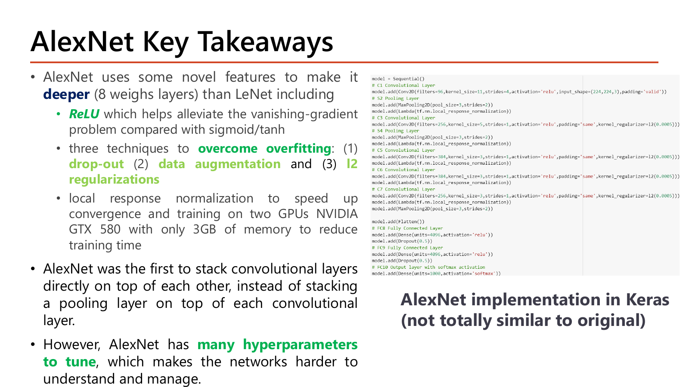
โค้ดใช้ input 224 แทน 227 ชั้นแรกจึงได้ ⌊(224 − 11)/4⌋ + 1 = 54 ไม่ใช่ 55 นี่คือเหตุที่สไลด์กำกับว่าไม่เหมือนต้นฉบับ
model = Sequential()
# C1 Convolutional Layer
model.add(Conv2D(filters=96,kernel_size=11,strides=4,activation='relu',input_shape=(224,224,3),padding='valid'))
# S2 Pooling Layer
model.add(MaxPooling2D(pool_size=3,strides=2))
model.add(Lambda(tf.nn.local_response_normalization))
# C3 Convolutional Layer
model.add(Conv2D(filters=256,kernel_size=5,strides=1,activation='relu',padding='same',kernel_regularizer=l2(0.0005)))
# S4 Pooling Layer
model.add(MaxPooling2D(pool_size=3,strides=2))
model.add(Lambda(tf.nn.local_response_normalization))
# C5 Convolutional Layer
model.add(Conv2D(filters=384,kernel_size=3,strides=1,activation='relu',padding='same',kernel_regularizer=l2(0.0005)))
model.add(Lambda(tf.nn.local_response_normalization))
# C6 Convolutional Layer
model.add(Conv2D(filters=384,kernel_size=3,strides=1,activation='relu',padding='same',kernel_regularizer=l2(0.0005)))
model.add(Lambda(tf.nn.local_response_normalization))
# C7 Convolutional Layer
model.add(Conv2D(filters=256,kernel_size=3,strides=1,activation='relu',padding='same',kernel_regularizer=l2(0.0005)))
model.add(Lambda(tf.nn.local_response_normalization))
model.add(MaxPooling2D(pool_size=3,strides=2))
model.add(Flatten())
# FC8 Fully Connected Layer
model.add(Dense(units=4096,activation='relu'))
model.add(Dropout(0.5))
# FC9 Fully Connected Layer
model.add(Dense(units=4096,activation='relu'))
model.add(Dropout(0.5))
# FC10 Output layer with softmax activation
model.add(Dense(units=1000,activation='softmax'))Conv2D(filters=96, kernel_size=11, strides=4, ..., padding='valid') | C1: kernel ใหญ่ ก้าวทีละ 4 ย่อภาพเร็วตั้งแต่ชั้นแรก |
MaxPooling2D(pool_size=3, strides=2) | หน้าต่าง 3 ก้าว 2 หน้าต่างติดกันซ้อนกัน 1 pixel เรียก overlapping pooling |
Lambda(tf.nn.local_response_normalization) | ห่อฟังก์ชัน TensorFlow เป็น layer ด้วย Lambda |
kernel_regularizer=l2(0.0005) | L2 regularization บน weight ของ filter |
Conv2D(384, 3) → Conv2D(384, 3) → Conv2D(256, 3) | C5–C7 ต่อกันโดยไม่มี pooling คั่น |
Dense(units=4096, activation='relu') + Dropout(0.5) | FC8, FC9 ทิ้ง node สุ่มครึ่งหนึ่งตอนเทรน |
Dense(units=1000, activation='softmax') | 1,000 class ของ ImageNet |
AlexNet มี 8 weight layer ไม่ใช่ 5 · ข้อเสียคือ hyperparameter เยอะ ไม่ใช่ parameter น้อยเกิน · dropout อยู่ในส่วน FC ไม่ใช่หลัง conv
same กับ stride 4 ให้ ⌈227/4⌉ = 57 · parameter ยังเป็น (11·11·3 + 1)·96 = 34,944 เพราะ padding ไม่อยู่ในสูตร parameter
AlexNet เหมือนบ้านที่ทุกห้องใช้อิฐคนละขนาด VGG ตัดสินใจใช้อิฐขนาดเดียวทั้งหลัง แล้วเพิ่มจำนวนชั้นแทน
VGG จาก Visual Geometry Group ของ Oxford ได้ top-5 error 7.3% เป็น runner up ปี 2014 จุดเด่นคือ สถาปัตยกรรมสม่ำเสมอ และ ลดขนาด filter เทียบกับ AlexNet เพื่อเรียนเร็วขึ้นและทน overfitting มากขึ้น VGG ใช้ ค่าตั้งเดียวทั้ง network:
| layer | ค่าตั้ง |
|---|---|
| conv ทุกชั้น | filter 3×3, stride 1, padding same |
| pooling ทุกชั้น | pool 2×2, stride 2 |
ผลคือ เข้าใจและเขียนง่าย VGG แทน filter ใหญ่ของ AlexNet คือ 11 และ 5 ด้วย filter 3×3 หลายชั้นต่อกัน receptive field เท่าเดิม แต่มี nonlinear layer มากขึ้น จึง เรียน feature ซับซ้อนขึ้นด้วยต้นทุนต่ำกว่า
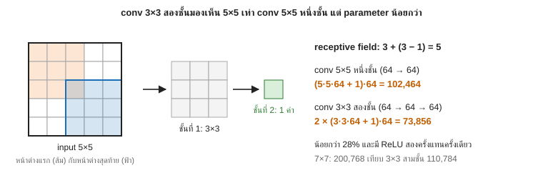
ค่าหนึ่งในชั้นที่สองมองชั้นแรก 3×3 แต่ละค่าในชั้นแรกมอง input 3×3 ที่เหลื่อมกันทีละ 1 ช่อง รวมเห็น 5×5 พอดี เทียบ parameter ที่ 64 channel: 5×5 ชั้นเดียว 102,464 กับ 3×3 สองชั้น 73,856
ทุกชั้นที่เพิ่มขยายมุมมองออก 2 ช่อง: สองชั้นเห็น 5 สามชั้นเห็น 7
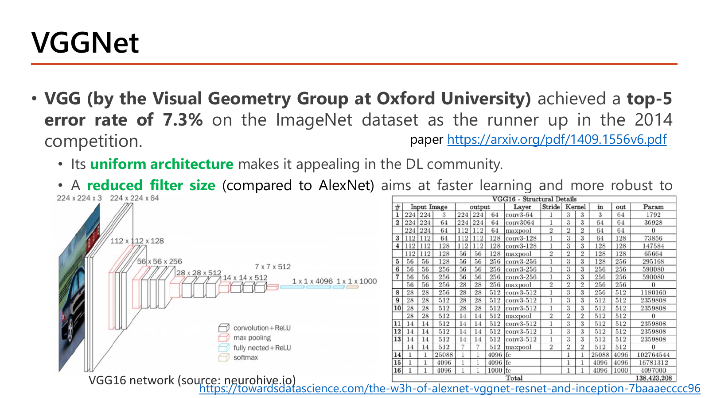
VGG16 มีจังหวะเดียวตลอด: pool หนึ่งครั้ง ด้านลดครึ่ง channel เพิ่มเท่าตัวจนถึง 512 คือ 224×224×64 → 112×112×128 → 56×56×256 → 28×28×512 → 14×14×512 → 7×7×512 แล้วต่อ FC 4096, 4096, 1000
kernel เล็กซ้อนกันมี parameter น้อยกว่า kernel ใหญ่ตัวเดียว ไม่ใช่มากกว่า · VGG ใช้ parameter มากที่สุดในสี่ตัวที่เทียบคือ 138M เพราะ FC ใหญ่ ไม่ใช่เพราะ 3×3
receptive field 3 + 2 + 2 = 7 · 3 × 36,928 = 110,784 เทียบ (7·7·64 + 1)·64 = 200,768 ประหยัดราว 45%
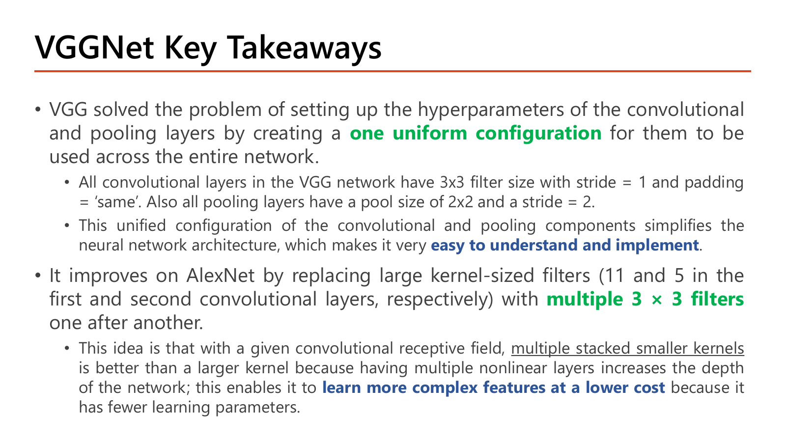
ไม่รู้ว่าควรใช้แว่นขยายขนาดไหน ก็ใช้ทุกขนาดพร้อมกันแล้วเอาผลมาวางเรียงกัน แต่ก่อนใช้แว่นใหญ่ บีบจำนวนแผ่นภาพลงก่อนเพื่อประหยัดแรง
Inception มาจากบทความ "Going Deeper with Convolutions" ของ Google ปี 2014 รุ่นหนึ่งคือ GoogLeNet ชนะ ILSVRC 2014 ด้วย top-5 error 6.67% เอกลักษณ์คือสร้าง network ที่ลึกขึ้น ซึ่ง สกัด feature ที่หลายขนาด และปรับ การใช้ทรัพยากรคำนวณให้ดีขึ้น
inception module ส่ง input เข้า 4 ทางขนาน: conv 1×1 · conv 1×1 → 3×3 · conv 1×1 → 5×5 · max pool 3×3 → conv 1×1 ทุกทางใช้ stride 1 และ padding same กว้างสูงเท่ากันหมด แล้ว concatenate ตาม depth conv 1×1 เรียก bottleneck layer ใช้ลด depth ก่อน kernel ใหญ่
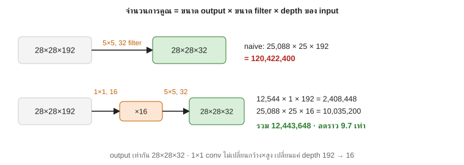
output เท่ากันคือ 28×28×32 แต่ทางล่างบีบ depth 192 เหลือ 16 ก่อน conv 5×5 จำนวนการคูณจึงลดจาก 120 ล้านเหลือ 12 ล้าน
ทุกค่าของ output ต้องคูณ f×f ครั้งต่อ channel ของ input สไลด์เขียนว่า จำนวนการคูณ = มิติ output × มิติ filter × depth ของ channel input
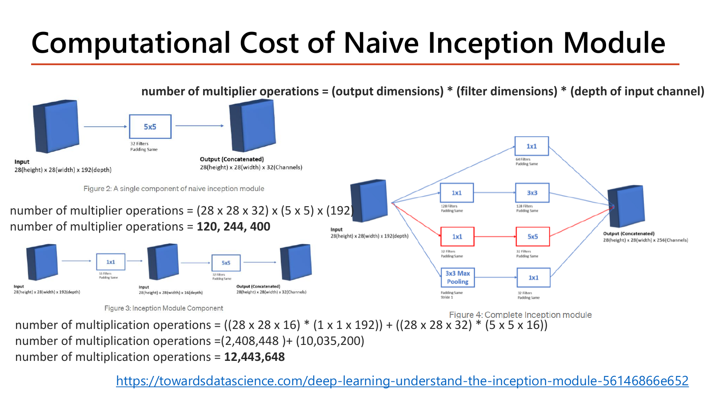
naive: (28×28×32) × (5×5) × 192 = 120,422,400 · bottleneck: (28×28×16)·(1×1×192) + (28×28×32)·(5×5×16) = 2,408,448 + 10,035,200 = 12,443,648 · ลดราว 9.7 เท่า
สไลด์พิมพ์ผลของ naive ว่า 120,244,400 ซึ่งสลับหลัก ค่าถูกคือ 25,088 × 25 × 192 = 120,422,400 · อีกสามค่าบนสไลด์ถูกต้อง
GoogLeNet มี 22 layer: ชุด CONV และ POOL ช่วงต้นเหมือน AlexNet, inception module 9 ตัว ตัวละ 2 layer มี max pool คั่นเป็นระยะ และ FC + softmax ท้าย GoogLeNet ลึกกว่าและกว้างกว่า CNN ก่อนหน้ามาก แต่ parameter น้อยกว่า AlexNet 10 เท่า คือ 6 ล้านจาก 60 ล้าน รุ่นต่อมาคือ Inception-v3 และ Inception-v4
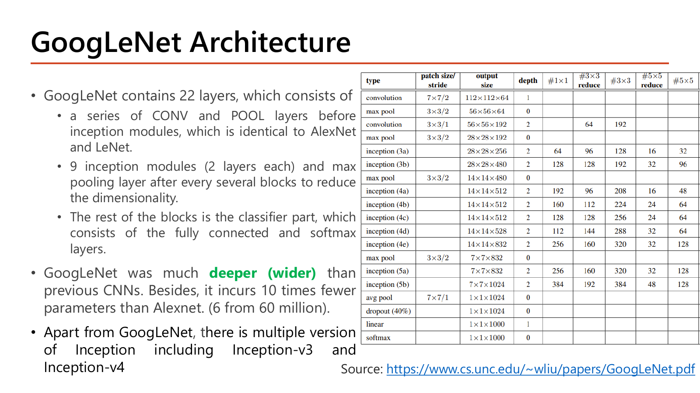
depth ของ output module = ผลบวก channel ปลายทางของ 4 ทาง ค่า reduce เป็นขั้นกลาง ไม่ถูกนำมาต่อ
inception (3a): 1×1 = 64, 3×3 = 128, 5×5 = 32, pool proj = 32 รวม 256 ได้ 28×28×256 · inception (3b): 128 + 192 + 96 + 64 = 480 ได้ 28×28×480 · กว้างสูงคง 28 เพราะทุกทางใช้ same
สรุปของสไลด์: แทนที่จะเลือกขนาด filter และตำแหน่ง pooling ให้ ใช้ทั้งหมดพร้อมกัน ในบล็อกเดียว เรียกว่า Inception Module แล้วสร้าง network ด้วยการ ซ้อน inception module ทับกัน · 1x1 CONV layer คง H และ W แต่เปลี่ยน depth วางก่อน 3×3 และ 5×5 เพื่อ ลด depth ซึ่ง ลดจำนวนการคำนวณ
1×1 conv ไม่ลดกว้าง×สูง ลดแค่ depth · concatenate ตาม depth คือบวกจำนวน channel ไม่ใช่บวกค่าใน feature map
ตรง: 28·28·64 × 9 × 256 = 115,605,504 · bottleneck: 28·28·32 × 256 = 6,422,528 บวก 28·28·64 × 9 × 32 = 14,450,688 รวม 20,873,216 ลดราว 5.5 เท่า
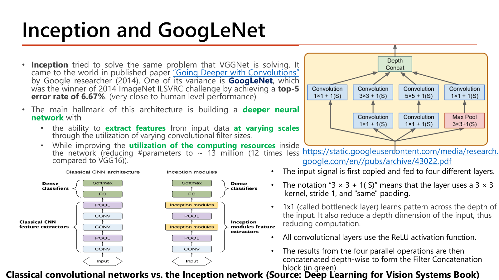
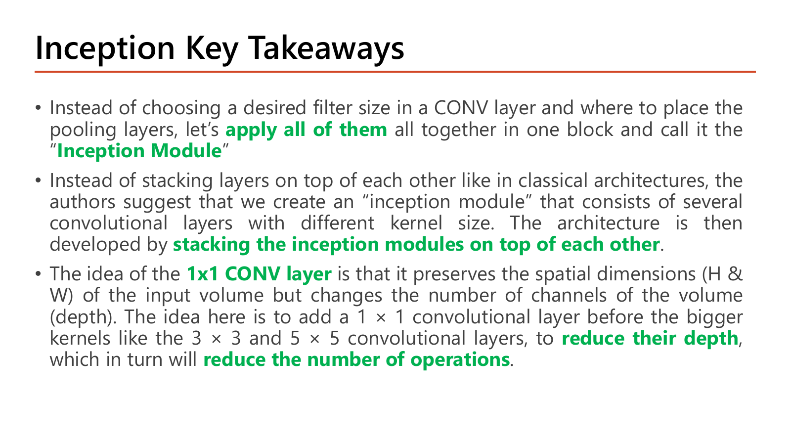
เวลาแก้รายงานฉบับร่าง ไม่ต้องเขียนใหม่ทั้งฉบับ แค่เขียนส่วนที่ต้องแก้แล้วแปะทับฉบับเดิม ถ้าไม่มีอะไรต้องแก้ ฉบับเดิมก็ผ่านไปเลย
ResNet ของ Microsoft Research ชนะ ILSVRC 2015 ด้วย top-5 error 4.49% ใช้ skip connection หรือ shortcut connection ข้ามทุกสอง CONV layer ได้ residual block ซึ่งแก้ ปัญหา vanishing gradient ทำให้เทรน network 50, 101, 152 weight layer ได้
output ของบล็อก = ส่วนที่สอง layer เรียน บวก input เดิม สอง layer เรียนแค่ "ส่วนที่ต้องเพิ่มจาก x"
| \(x\) | input ของบล็อก |
| \(\net{f(x)}\) | output ของ Layer 1 → Layer 2 คือส่วน residual ที่เรียน |
| \(h(x)\) | สิ่งที่ต้องการให้บล็อกทำได้ |
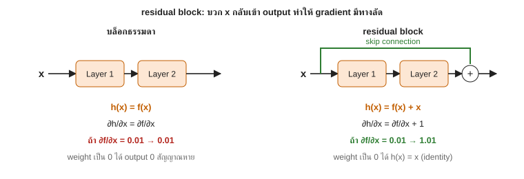
ตอน backprop บล็อกธรรมดาส่ง gradient ต่อเท่ากับ ∂f/∂x ถ้าเล็ก gradient ก็หาย residual block ได้ ∂f/∂x + 1 เสมอ พจน์ +1 คือทางลัดที่ gradient ไหลกลับโดยไม่ถูกคูณด้วยค่าเล็ก
ไม่มี skip: ตัวคูณ 0.8 ทุกชั้น 50 ชั้นได้ 0.8⁵⁰ ≈ 0.000014 · มี skip และ ∂f/∂x = 0.01: บล็อกธรรมดาส่ง 0.01 · residual ส่ง 1.01 · ถ้า weight เป็น 0 ทั้งหมด: f(x) = 0 จึง h(x) = x บล็อกกลายเป็น identity
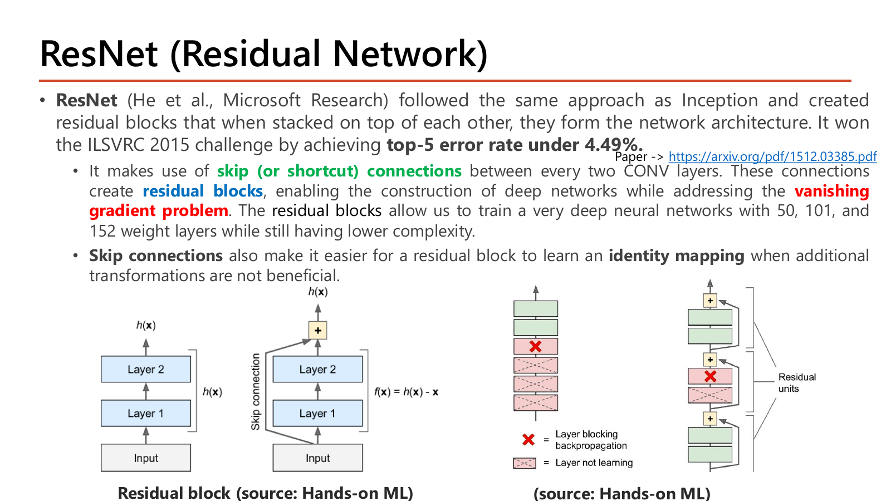
รูปขวาบนสไลด์มี layer ที่ถูกกากบาทว่า block backpropagation แต่ layer ก่อนหน้ายังเรียนต่อได้ เพราะ gradient อ้อมผ่าน skip connection
skip connection บวก x เข้าไป ไม่ได้คูณ และไม่ได้ลด parameter · ประโยชน์หลักคือ gradient ไหล ไม่ใช่ทำให้โมเดลเล็ก
รุ่นที่ชนะใช้ 152 layer ตัวอย่างบนสไลด์คือ ResNet-34 ต้นและท้ายเหมือน GoogLeNet แต่ไม่มี dropout ตรงกลางคือ residual unit ซ้อนกัน แต่ละ unit มี conv 3×3 สองชั้นพร้อม BN และ ReLU stride 1 padding same มี ไม่มี pooling layer ใน residual block รุ่น 50, 101, 152 ใช้ 1x1 convolutional layer เป็น bottleneck แบบ Inception
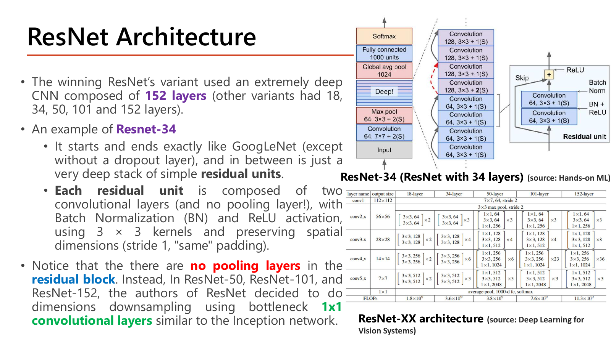
ตัวเลขในชื่อรุ่นคือจำนวน weight layer นับจากตาราง: conv แรก 1 ชั้น + บล็อกทุก stage × ชั้นต่อบล็อก + FC 1 ชั้น
ResNet-34: 1 + (3 + 4 + 6 + 3) × 2 + 1 = 34 · ResNet-50 ใช้บล็อก bottleneck 3 ชั้น: 1 + (3 + 4 + 6 + 3) × 3 + 1 = 50 · ResNet-152 บล็อก 3, 8, 36, 3: 1 + 50 × 3 + 1 = 152
สรุปของสไลด์: ResNet สร้าง network ที่ลึกกว่า ทุกตัวก่อนหน้า นำเสนอ skip connection ที่เรียก residual module ใช้ batch normalization หนักมาก และเทรน network หลายร้อยชั้นได้
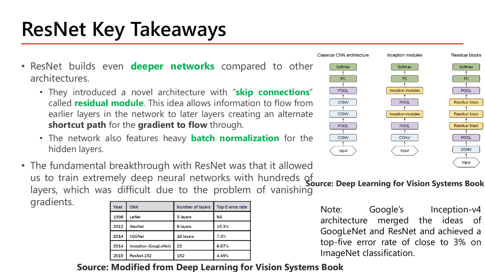
ตารางท้ายสไลด์คือคู่ตัวเลขชุดเดียวกับรูปแท่งตอน 1.1 เพิ่ม LeNet 5 layer ที่ไม่มี error เพราะไม่ได้แข่ง หมายเหตุใต้ตาราง: Inception-v4 รวม GoogLeNet กับ ResNet ได้ top-5 error ใกล้ 3%
1 + (3 + 4 + 23 + 3) × 3 + 1 = 1 + 99 + 1 = 101
| Network | จุดเด่น | top-5 accuracy | Parameters | FLOP |
|---|---|---|---|---|
| AlexNet 2012 | Deeper | 84.70% | 62M | 1.5B |
| VGGNet 2014 | Fixed-size kernels | 92.30% | 138M | 19.6B |
| Inception 2014 | Wider, parallel kernels | 93.30% | 6.4M | 2B |
| ResNet-152 2015 | Shortcut connections | 95.51% | 60.3M | 11B |
ตัวอย่างนี้มีไว้ให้เห็นว่า accuracy สูงขึ้นไม่จำเป็นต้องใช้ parameter มากขึ้น
Inception ชนะ VGG 1 จุดด้วย parameter น้อยกว่าราว 21.6 เท่า คือ 6.4M กับ 138M และ FLOP น้อยกว่าราว 9.8 เท่า และ ResNet-152 ลึกเกือบ 10 เท่าของ VGG16 แต่ parameter ไม่ถึงครึ่ง FLOP คือจำนวนการคำนวณของ forward pass หนึ่งครั้ง accuracy กับ error สัมพันธ์กัน: 100 − 95.51 = 4.49%
ตัวที่ parameter มากที่สุดคือ VGG ไม่ใช่ ResNet-152 · ตัวที่ parameter น้อยที่สุดคือ Inception
CNN ยุคใหม่ไม่ได้แค่ "ทำให้ลึกขึ้น" แต่ต้องสมดุล accuracy, parameter, การคำนวณ, memory และความเร็วตอน inference
| รุ่น | แนวคิดหลัก |
|---|---|
| Xception | depthwise separable convolution |
| MobileNet | depthwise separable convolution เพื่อโมเดลเบาและเร็ว ใช้ในมือถือและเว็บ |
| DenseNet | dense connection: output ของทุก layer ป้อนให้ทุก layer ถัดไปใน block เดียวกัน คือ feature reuse |
| EfficientNet ปี 2019 | compound scaling เพิ่ม depth + width + resolution ร่วมกันอย่างมีหลัก |
| ConvNeXt ปี 2020 | ConvNet ล้วนที่ปรับ ResNet-50 ตามแนวคิด Transformer ทีละขั้น จนชนะ Swin |
DenseNet: input ของ block 64 channel ทุก layer ให้ output 32 channel · layer 4 รับ concatenation ของ input กับ output layer 1, 2, 3 = 64 + 32 + 32 + 32 = 160 channel
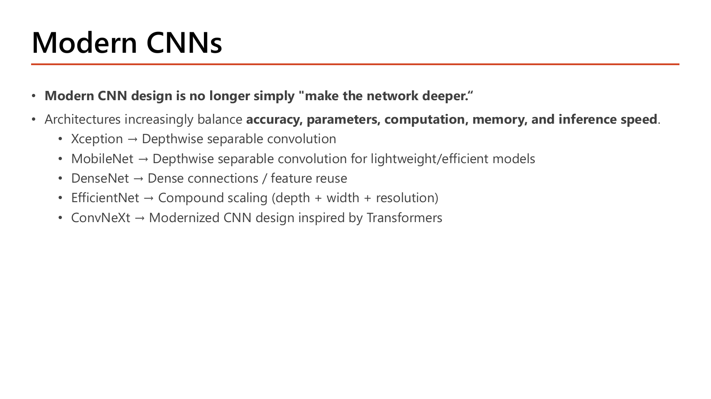
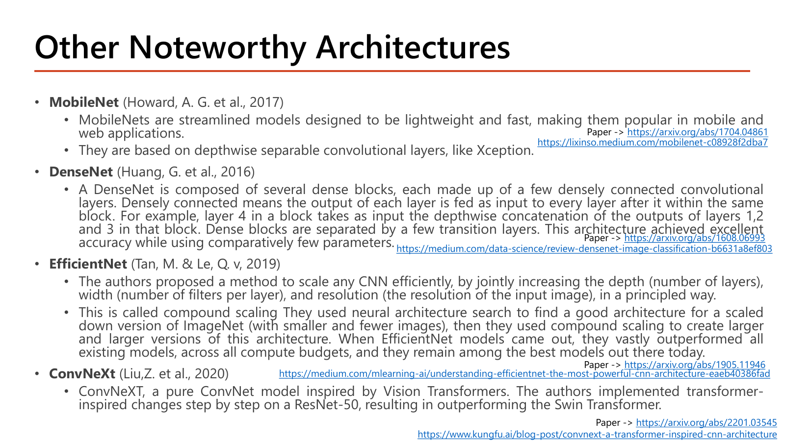
conv ปกติหาทั้ง "รูปทรงในแผ่นภาพ" และ "การผสมข้ามแผ่น" ในขั้นเดียว separable conv แยกเป็นสองงาน: หารูปทรงทีละแผ่นก่อน แล้วค่อยผสมข้ามแผ่นด้วย 1×1
Xception คือ eXtreme Inception ของ Chollet ปี 2016 ชนะ Inception-v3 ชัดเจนบนงาน 350 ล้านภาพ 17,000 class รวมแนวคิด GoogLeNet กับ ResNet แบบ Inception-v4 แต่แทน inception module ด้วย depthwise separable convolutional layer สมมติฐานคือ pattern เชิงพื้นที่กับ pattern ข้าม channel แยกกันโมเดลได้ ผลคือใช้ parameter น้อยกว่า ลด overfitting ใช้ memory และการคำนวณน้อยกว่า และมักทำงานดีกว่า
| ส่วน | ทำอะไร | parameter ที่ 64 → 128, 3×3 |
|---|---|---|
| depthwise | spatial filter 1 ตัวต่อ 1 input channel | 3·3·64 = 576 |
| pointwise | conv 1×1 ปกติ หา pattern ข้าม channel | 64·128 + 128 = 8,320 |
| รวม separable | 8,896 | |
| conv ปกติ | ทำทั้งสองอย่างพร้อมกัน | (3·3·64 + 1)·128 = 73,856 |
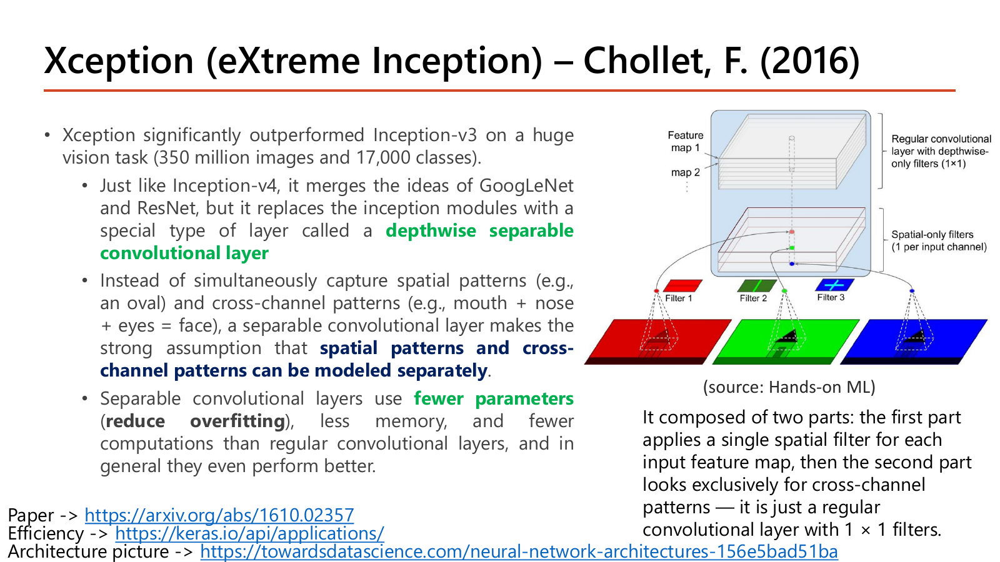
ตัวเลขในตารางคือค่าที่ Keras รายงาน: SeparableConv2D(128, 3) บน input 64 channel ให้ 8,896 ส่วน Conv2D(128, 3) ให้ 73,856 ต่างกันราว 8.3 เท่า output shape เท่ากัน
depthwise ไม่ผสม channel เลย จำนวน output channel ของส่วนนี้ = input channel การผสมข้าม channel เกิดที่ pointwise 1×1
depthwise 3·3·32 = 288 · pointwise 32·64 + 64 = 2,112 · รวม 2,400 เทียบ Conv2D ปกติ (9·32 + 1)·64 = 18,496
มีสองทาง: 1. สร้างโมเดลเองตั้งแต่ศูนย์ หรือ 2. ใช้ transfer learning โดยเฉพาะเมื่อ dataset เล็ก หลักสร้างเองจากหนังสือ Deep Learning with Python:
| หลัก | เหตุผล |
|---|---|
| จัดเป็นบล็อกซ้ำ แต่ละบล็อกมี conv หลายชั้น | แบบ VGG |
| จำนวน filter เพิ่มเมื่อขนาด feature map ลด | รักษาปริมาณข้อมูล |
| deep and narrow ดีกว่า broad and shallow | แบบ 3×3 ซ้อน |
| ใส่ residual connection รอบบล็อก | เทรนลึกได้ แบบ ResNet |
| ใส่ batch normalization หลัง conv อาจช่วย | เทรนเสถียร |
| แทน Conv2D ด้วย SeparableConv2D อาจช่วย | parameter น้อยกว่า แบบ Xception |
ใช้ hyperparameter tuning จาก Lesson 6 หาค่าได้ สไลด์มีตัวอย่างใน ลิงก์ แต่ใช้เวลามาก วิธีที่นิยมคือต่อยอดจากสถาปัตยกรรมที่มีอยู่แล้ว
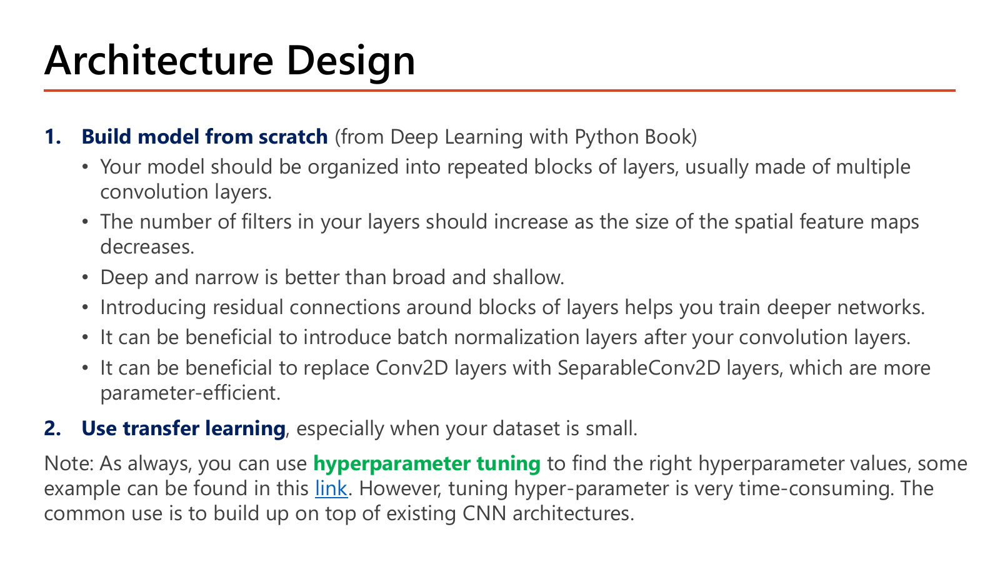
คนที่เรียนแยกสัตว์ พืช และยานพาหนะมาแล้ว ถ้าต้องมาแยกแท็กซี่ ตุ๊กตุ๊ก รถตู้ สามล้อ ไม่ต้องเริ่มเรียนว่าล้อหน้าตาอย่างไรใหม่ ใช้ความรู้เดิมเรื่องขอบ สี ล้อ กระจก แล้วเรียนแค่ส่วนที่ต่าง
Transfer learning คือ นำ layer ที่เทรนแล้วพร้อม weight ที่ปรับดีแล้วกลับมาใช้ จาก โมเดลที่มีอยู่ เพื่อเทรน โมเดลของเรา ได้ผลดีมากกับ dataset ภาพเล็ก เทรนเร็วขึ้นมาก และช่วย generalize ลด overfitting
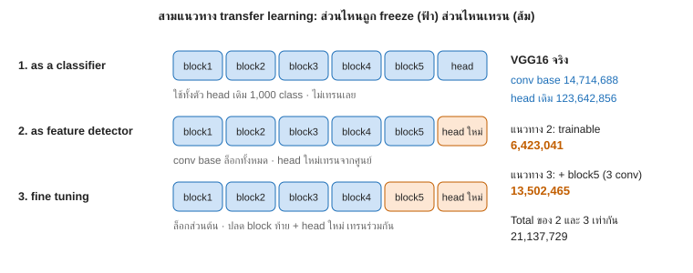
อ่านแต่ละแถวจากซ้ายไปขวา: ส่วนฟ้าคือ weight ที่ล็อกไว้ ส่วนส้มคือส่วนที่เทรน แถวล่างสุดปลด block ท้ายเพิ่มจากแถวกลาง ตัวเลขขวาคือ trainable parameter จริงของ VGG16 ในตัวอย่างตอน 5.3
| แนวทาง | ทำอะไร | เทรนส่วนไหน |
|---|---|---|
| pretrained model เป็น classifier | จำแนกภาพใหม่ตรงๆ ไม่แก้อะไร | ไม่เทรนเพิ่ม |
| pretrained model เป็นตัวสกัด feature | ล็อกส่วนสกัด feature ทั้งหมด แล้ว เพิ่ม classifier ใหม่ | classifier ใหม่ เทรนจากศูนย์ |
| fine tuning | ล็อกเพียงบางส่วนของส่วนสกัด feature | เทรนร่วมกันทั้งคู่ คือ layer ที่ไม่ล็อก และ classifier ใหม่ |
สไลด์สะกด "Find tuning" หมายถึง fine tuning · feature detector ล็อกทั้ง conv base ส่วน fine tuning ล็อกแค่บางส่วน คำว่า "ทั้งหมด" กับ "บางส่วน" คือจุดแยก
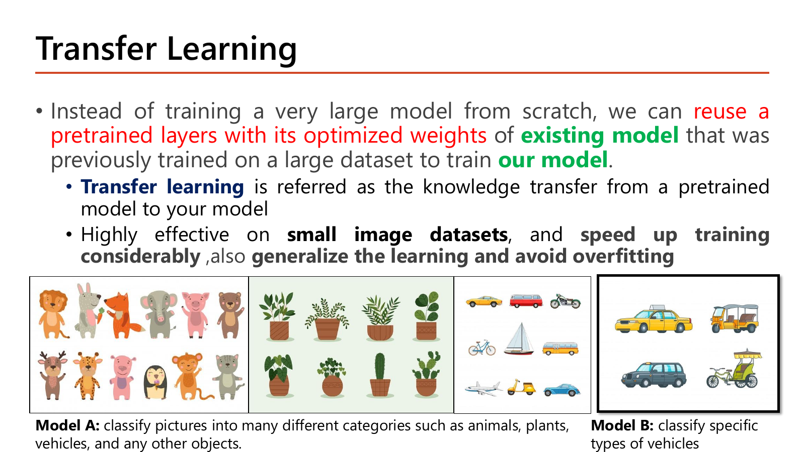
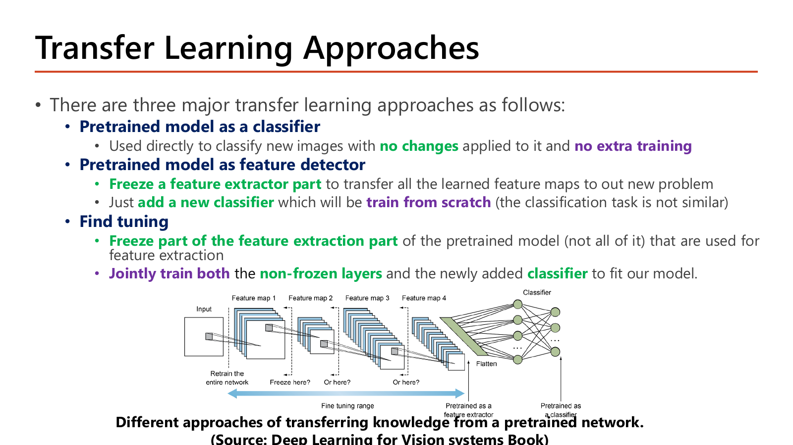
| ส่วน | คำแนะนำ |
|---|---|
| ภาพ input | ควรขนาดเท่างานเดิม resize ให้ตรง แต่ลดขนาดได้ถ้าต้องการลดการคำนวณ |
| hidden layer | layer ต้นสกัด feature ทั่วไปมาก เช่นขอบ สี texture จึง reuse layer ล่างได้ |
| output layer | มักต้องแทนที่ เพราะจำนวน class ไม่ตรงและไม่มีประโยชน์กับงานใหม่ |
รูปบนสไลด์ หน้า 23: DNN ของ task A มี Hidden 1–5 DNN ของ task B นำ Hidden 1–4 มาใช้ Hidden 1–2 ล็อก Hidden 3–4 เทรนได้ ทิ้ง Hidden 5 กับ output เดิม แล้วใส่ output ใหม่
เลือกระดับการ tune ที่เหมาะโดยดูจาก สองปัจจัยสำคัญ: ความคล้าย ของ domain ต้นทาง กับ ปลายทาง และ ปริมาณข้อมูล ว่า น้อย หรือ มาก
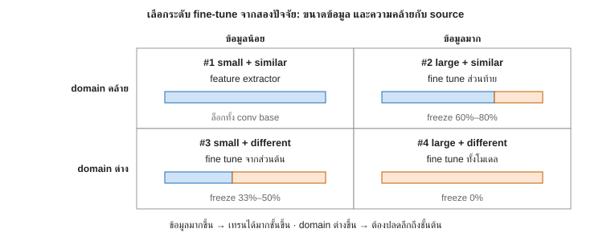
ไล่ช่องจากซ้ายบนไปขวาล่าง ส่วนฟ้าคือสัดส่วนที่ freeze ลดลงเรื่อยๆ ข้อมูลน้อยต้องพึ่ง source มาก จึง fine tune น้อย domain ต่างมาก feature ระดับสูงของ source ใช้ไม่ได้ ต้องปลดย้อนไปถึงชั้นต้น
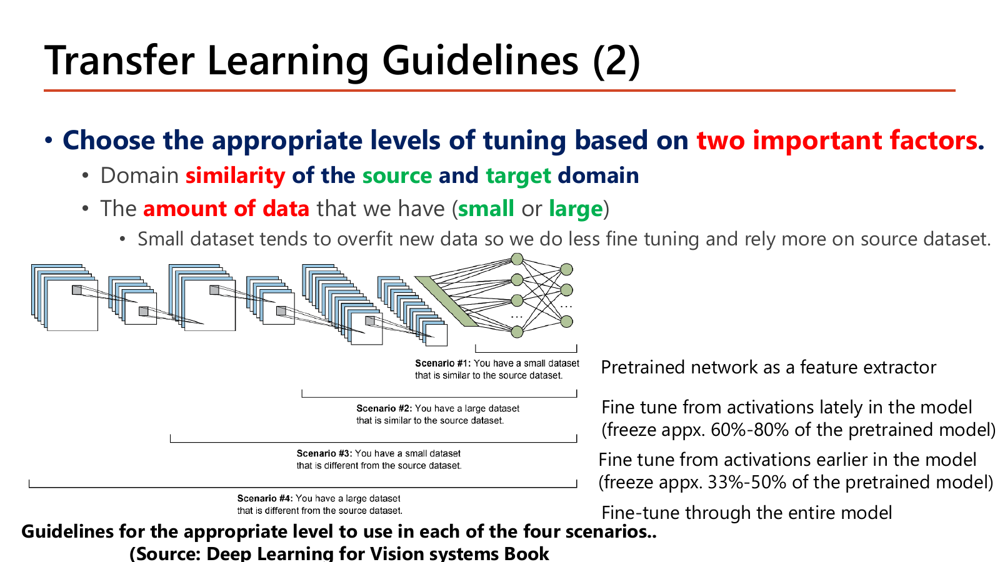
ตัวเลขที่ต้องจำบนสไลด์: scenario #2 large + similar ให้ freeze ราว 60%–80% · scenario #3 small + different ให้ freeze ราว 33%–50% · #1 ใช้เป็น feature extractor · #4 fine tune ทั้งโมเดล
สไลด์หน้า 25: ใช้ learning rate เล็กลงเมื่อ fine tuning เพราะ weight เดิมดีอยู่แล้ว กลยุทธ์ช่วยให้ converge ถ้ามีปัญหา:
| ขั้น | ทำอะไร |
|---|---|
| ปัญหา | output layer ใหม่ถูกสุ่ม ผิดมากช่วงแรก เกิด gradient ของ error ขนาดใหญ่ ที่อาจทำลาย weight เดิม |
| 1 | freeze layer เดิมช่วง epoch แรก เพื่อ ให้เวลา layer ใหม่เรียน weight ที่สมเหตุสมผล |
| 2 | เทรนสองสาม epoch แล้วปลดล็อก layer ที่นำมาใช้ ต้อง compile ใหม่ แล้วเทรนต่อ |
| 3 | หลังปลดล็อก ลด learning rate อีกครั้ง |
ตอน fine tune ใช้ learning rate เล็กลง ไม่ใช่ใหญ่ขึ้น · เปลี่ยน trainable แล้วต้อง compile ใหม่จึงมีผล · domain ต่างมากต้อง freeze น้อยลง ไม่ใช่มากขึ้น
ข้อมูลน้อย + domain ต่าง คือ scenario #3 fine tune จาก activation ช่วงต้น freeze ราว 33%–50% และใช้ learning rate เล็ก
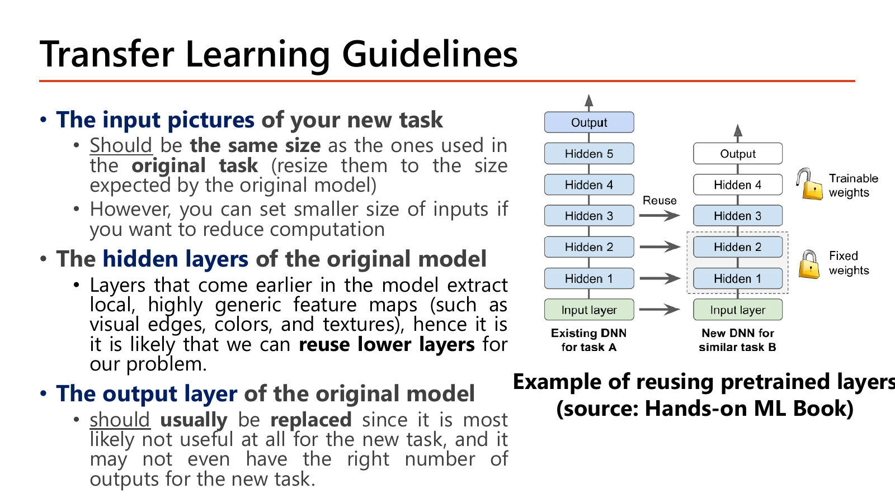
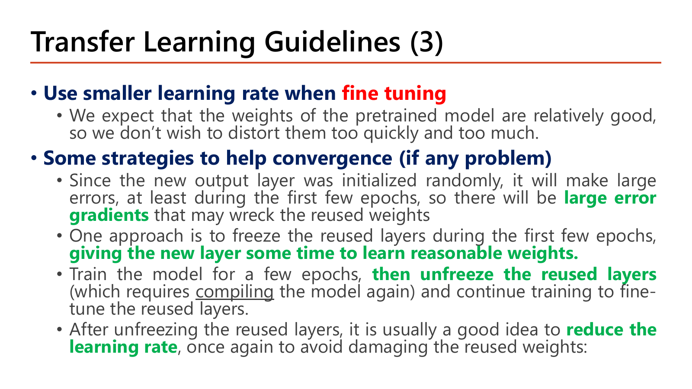
ตัวอย่างนี้มีไว้ให้เห็นว่า สามแนวทางต่างกันแค่ include_top และ trainable และอ่าน trainable parameter ออกจากโค้ดได้
โจทย์: แยกสุนัขกับแมว 4,000 ภาพ อย่างละ 2,000 ด้วย VGG16 ขั้นแรก สร้างโฟลเดอร์ตามโครงสร้างที่ ImageDataGenerator ของ Keras อ่านภาพจากโฟลเดอร์ได้: cats_and_dogs_small มี train, validation, test แต่ละอันมีโฟลเดอร์ย่อย cats และ dogs ชื่อโฟลเดอร์ย่อยกลายเป็น label
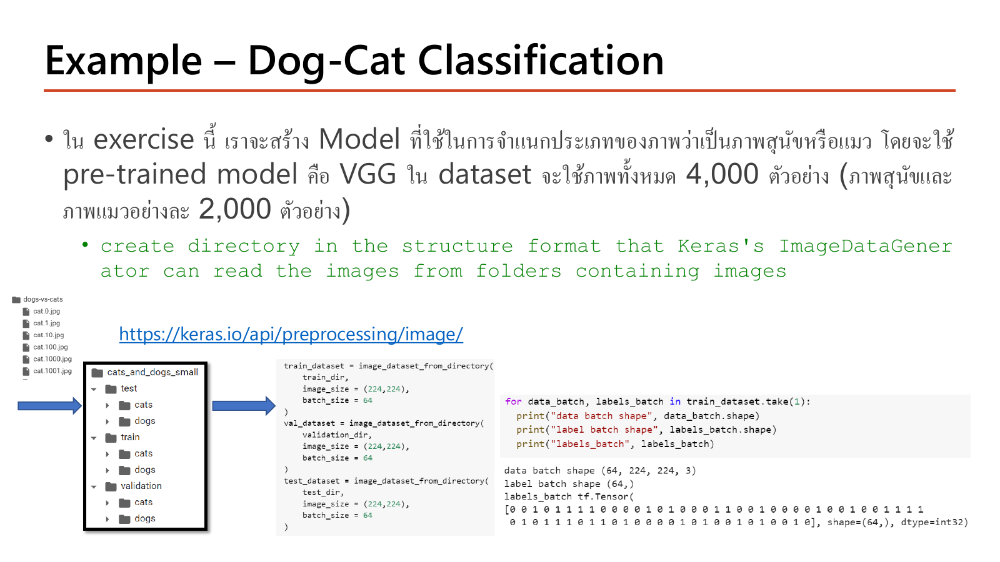
ผลที่พิมพ์บนสไลด์: data batch shape (64, 224, 224, 3) และ label batch shape (64,) label เป็น 0 หรือ 1 ตามลำดับตัวอักษร cats = 0 dogs = 1 train 2,000 ภาพได้ 32 batch ต่อ epoch โดย batch สุดท้ายมี 2,000 − 31 × 64 = 16 ภาพ
train_dataset = image_dataset_from_directory(
train_dir,
image_size = (224,224),
batch_size = 64
)
val_dataset = image_dataset_from_directory(
validation_dir,
image_size = (224,224),
batch_size = 64
)
test_dataset = image_dataset_from_directory(
test_dir,
image_size = (224,224),
batch_size = 64
)
for data_batch, labels_batch in train_dataset.take(1):
print("data batch shape", data_batch.shape)
print("label batch shape", labels_batch.shape)
print("labels_batch", labels_batch)image_dataset_from_directory(train_dir, ...) | อ่านภาพจากโฟลเดอร์ label จากชื่อโฟลเดอร์ย่อย |
image_size = (224,224) | resize ให้เท่าขนาดที่ VGG16 ใช้ในงานเดิม ตาม guideline |
batch_size = 64 · train_dataset.take(1) | ทีละ 64 ภาพ · ดึง 1 batch มาดู shape |
Approach #1 เป็น classifier: โหลด VGG16 ทั้งตัวรวม head 1,000 class แล้ว predict ทันที
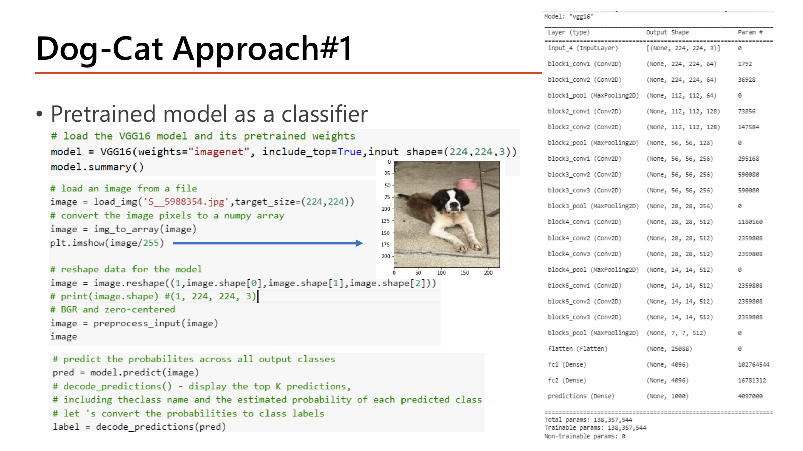
ข้อจำกัดของ approach นี้เห็นจากผล predict: output เป็นชื่อ class ของ ImageNet เช่นสายพันธุ์สุนัข ไม่ใช่สอง class dog/cat ตามโจทย์ ลำดับก่อน predict คือ load_img → img_to_array → reshape เป็น (1, 224, 224, 3) → preprocess_input → predict → decode_predictions
# load the VGG16 model and its pretrained weights
model = VGG16(weights="imagenet", include_top=True,input_shape=(224,224,3))
model.summary()
# load an image from a file
image = load_img('S__5988354.jpg',target_size=(224,224))
# convert the image pixels to a numpy array
image = img_to_array(image)
plt.imshow(image/255)
# reshape data for the model
image = image.reshape((1,image.shape[0],image.shape[1],image.shape[2]))
# print(image.shape) #(1, 224, 224, 3)
# BGR and zero-centered
image = preprocess_input(image)
image
# predict the probabilites across all output classes
pred = model.predict(image)
# decode_predictions() - display the top K predictions,
# including theclass name and the estimated probability of each predicted class
# let 's convert the probabilities to class labels
label = decode_predictions(pred)VGG16(weights="imagenet", include_top=True, input_shape=(224,224,3)) | โหลด VGG16 พร้อม weight ImageNet รวม head fc1, fc2, predictions · 138,357,544 parameter |
image.reshape((1, ...)) | เพิ่มมิติ batch โมเดลรับ input เป็น batch เสมอ |
preprocess_input(image) | แปลง RGB เป็น BGR และลบค่าเฉลี่ยแต่ละ channel แบบตอนเทรน VGG16 |
model.predict(image) · decode_predictions(pred) | ได้ shape (1, 1000) · แปลงเป็นชื่อ class top 5 |
head ของ VGG16: fc1 25,088·4,096 + 4,096 = 102,764,544 · fc2 4,096·4,096 + 4,096 = 16,781,312 · predictions 4,096·1,000 + 1,000 = 4,097,000 · conv base = 138,357,544 − 123,642,856 = 14,714,688 คือ head กิน 89% ของโมเดล
Approach #2 เป็น feature detector: โหลดแค่ conv base ด้วย include_top=False แล้วต่อ head ใหม่ สไลด์มีสองวิธี วิธี A ไม่มี augmentation ส่งภาพผ่าน conv base ครั้งเดียว เก็บ feature เป็น array แล้วเทรน head เล็กบน feature วิธี B มี augmentation วาง conv base ไว้ในโมเดลและ freeze
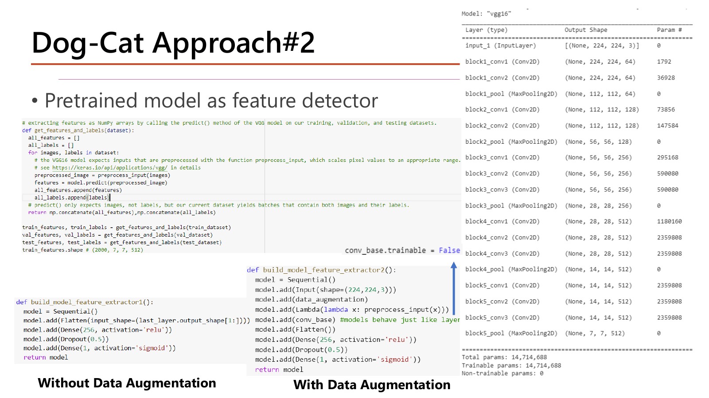
วิธี A เทรนเร็วมาก ราว 1 วินาทีต่อ epoch เพราะเทรนแค่ dense สองชั้นบน feature ที่คำนวณไว้ แต่ augment ไม่ได้ เพราะ feature มาจากภาพเดิมครั้งเดียว วิธี B ช้ากว่าเพราะทุก batch ต้องผ่าน conv base test accuracy ที่อาจารย์รันได้: A 0.974 · B 0.980
# instantiate the VGG16 model.
conv_base = VGG16(weights='imagenet',include_top=False,input_shape=(224,224,3))
# extracting features as NumPy arrays by calling the predict() method of the VGG model on our training, validation, and testing datasets.
def get_features_and_labels(dataset):
all_features = []
all_labels = []
for images, labels in dataset:
# the VGG16 model expects inputs that are preprocessed with the function preprocess_input, which scales pixel values to an appropriate range.
preprocessed_image = preprocess_input(images)
features = conv_base.predict(preprocessed_image)
all_features.append(features)
all_labels.append(labels)
# predict() only expects images, not labels, but our current dataset yields batches that contain both images and their labels.
return np.concatenate(all_features),np.concatenate(all_labels)
train_features, train_labels = get_features_and_labels(train_dataset)
val_features, val_labels = get_features_and_labels(val_dataset)
test_features, test_labels = get_features_and_labels(test_dataset)
train_features.shape # (2000, 7, 7, 512)
def build_model_feature_extractor1():
model = Sequential()
model.add(Flatten(input_shape=(last_layer.output_shape[1:])))
model.add(Dense(256, activation='relu'))
model.add(Dropout(0.5))
model.add(Dense(1, activation='sigmoid'))
return model
conv_base.trainable = False
def build_model_feature_extractor2():
model = Sequential()
model.add(Input(shape=(224,224,3)))
model.add(data_augmentation)
model.add(Lambda(lambda x: preprocess_input(x)))
model.add(conv_base) #models behave just like layers
model.add(Flatten())
model.add(Dense(256, activation='relu'))
model.add(Dropout(0.5))
model.add(Dense(1, activation='sigmoid'))
return modelVGG16(weights='imagenet', include_top=False, ...) | ตัด head ออก เหลือ conv base จบที่ block5_pool output (7, 7, 512) · 14,714,688 parameter |
conv_base.predict(preprocessed_image) | forward อย่างเดียว ได้ (64, 7, 7, 512) ต่อ batch |
np.concatenate(all_features) | ต่อทุก batch ได้ train_features.shape = (2000, 7, 7, 512) |
Flatten(input_shape=(last_layer.output_shape[1:])) | input ของโมเดลใหม่คือ feature ไม่ใช่ภาพ flatten ได้ 25,088 |
Dense(1, activation='sigmoid') | binary: 1 node + sigmoid คู่กับ binary_crossentropy |
conv_base.trainable = False | freeze ทุก layer ของ conv base ต้องทำก่อน compile |
Lambda(lambda x: preprocess_input(x)) | ห่อ preprocess_input เป็น layer ใส่ใน Sequential ได้ |
model.add(conv_base) | ใส่โมเดลทั้งตัวเป็น layer เดียว "models behave just like layers" |
Dense(256): 25,088·256 + 256 = 6,422,784 · Dense(1): 256 + 1 = 257 · trainable = 6,423,041 · non-trainable = 14,714,688 · total = 21,137,729 · Flatten, Dropout, Lambda และ augmentation ไม่มี parameter
Approach #3 fine tuning: freeze conv base ถึง block4 ปล่อย block5 คือ conv สามชั้นสุดท้ายให้เทรนร่วมกับ head ใหม่
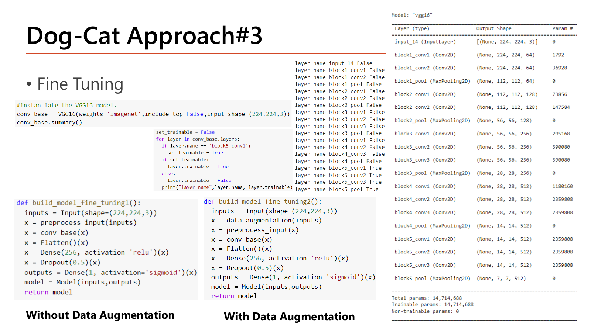
ผลของลูป print: input ถึง block4_pool เป็น False ส่วน block5_conv1, block5_conv2, block5_conv3, block5_pool เป็น True อาจารย์ compile ด้วย Adam(learning_rate=0.00001) เล็กกว่า 0.001 ของ approach #2 ถึง 100 เท่า test accuracy: ไม่มี augmentation 0.972 · มี 0.980
#instantiate the VGG16 model.
conv_base = VGG16(weights='imagenet',include_top=False,input_shape=(224,224,3))
conv_base.summary()
set_trainable = False
for layer in conv_base.layers:
if layer.name == 'block5_conv1':
set_trainable = True
if set_trainable:
layer.trainable = True
else:
layer.trainable = False
print("layer name",layer.name, layer.trainable)
def build_model_fine_tuning2():
inputs = Input(shape=(224,224,3))
x = data_augmentation(inputs)
x = preprocess_input(x)
x = conv_base(x)
x = Flatten()(x)
x = Dense(256, activation='relu')(x)
x = Dropout(0.5)(x)
outputs = Dense(1, activation='sigmoid')(x)
model = Model(inputs,outputs)
return modelset_trainable = False | ธงเริ่มต้น layer ก่อนจุดตัดถูก freeze |
if layer.name == 'block5_conv1': set_trainable = True | พลิกธงที่ block5_conv1 และค้างเป็น True กับทุก layer ถัดไป |
layer.trainable = True / False | ตั้งค่าแต่ละ layer ตามธง |
inputs = Input(...) … Model(inputs,outputs) | Functional API เรียก layer เป็นฟังก์ชันบน tensor x ดู Lesson 9 · build_model_fine_tuning1 เหมือนกันแต่ไม่มี data_augmentation |
conv หนึ่งชั้นของ block5: (3·3·512 + 1)·512 = 2,359,808 · สามชั้น 7,079,424 · trainable = 7,079,424 + 6,423,041 = 13,502,465 · non-trainable = 14,714,688 − 7,079,424 = 7,635,264 · total 21,137,729 เท่า approach #2 · ปลด 4 จาก 19 layer ของ conv base คือ freeze ราว 79% ตรงกับ scenario #2 เพราะสุนัขแมวคล้าย ImageNet
include_top=False ตัด head ออก ไม่ได้ freeze อะไร freeze ทำด้วย trainable = False · total parameter ของ approach #2 และ #3 เท่ากัน ต่างแค่ trainable
block4 มี conv สามชั้น ชั้นแรกรับ 256 channel: (9·256 + 1)·512 = 1,180,160 · อีกสองชั้นชั้นละ 2,359,808 · รวม 5,899,776 จึงได้ trainable 13,502,465 + 5,899,776 = 19,402,241
แทนที่จะเลื่อนแว่นขยายไปทีละจุด ViT ตัดภาพเป็นจิ๊กซอว์ชิ้นเท่ากัน แล้วให้ทุกชิ้นดูทุกชิ้นพร้อมกัน ว่าชิ้นไหนเกี่ยวกับชิ้นไหน
สไลด์สรุปสองขั้น: replace convolution with attention ได้ ViT · recover hierarchy และ locality ใน ViT ได้ Swin CNN อ่านภาพเป็น convolution → local feature → layer ลึก → receptive field ใหญ่ขึ้น ViT อ่านเป็นแบ่ง patch → patch embedding → Transformer encoder → classification รายละเอียด attention อยู่ Lesson 11 บทนี้ให้เข้าใจแค่ว่า self-attention ให้ทุก token คำนวณความเกี่ยวข้องกับทุก token แล้วรวมข้อมูลตามน้ำหนักนั้น
| ขั้น | ViT ทำอะไร |
|---|---|
| 1 | แบ่งภาพเป็น fixed-size patch แต่ละ patch คือ token แบบคำใน NLP |
| 2 | flatten แต่ละ patch แล้วแปลงเชิงเส้นเป็น vector ขนาดคงที่ เรียก patch embedding |
| 3 | บวก position embedding ให้รู้ว่า patch อยู่ตรงไหน |
| 4 | Transformer เรียนความสัมพันธ์ระหว่าง patch ด้วย self-attention แล้วรวมข้อมูลจากหลายส่วนของภาพไปทำนาย |
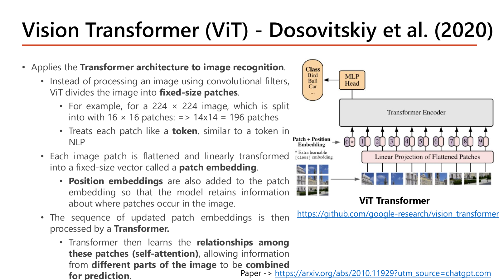
ภาพ 224×224 patch 16×16: ด้านละ 224/16 = 14 ได้ 14 × 14 = 196 patch · หนึ่ง patch หลัง flatten มี 16 × 16 × 3 = 768 ค่า · global self-attention ต้องคิด 196² = 38,416 คู่ · รูปบนสไลด์มี class embedding พิเศษที่ตำแหน่ง 0 อีก 1 ตัว
| CNN | ViT |
|---|---|
| convolution | self-attention |
| locality bias แรง | global interaction |
| pixel และ feature จัดตามพื้นที่ | ภาพเป็น patch token |
| feature เป็นลำดับชั้นโดยธรรมชาติ | ViT ดั้งเดิมไม่ค่อยเป็นลำดับชั้น |
คุณสมบัติของ ViT: ไม่ต้องมี convolution เลย · มี inductive bias เฉพาะภาพน้อยกว่า CNN คือ CNN ถูกออกแบบให้เชื่อว่า pixel ใกล้กันเกี่ยวกัน ViT ต้องเรียนเองจากข้อมูล · ได้ประโยชน์มากจาก pretraining ขนาดใหญ่ และ fine-tune ต่อได้
ViT ไม่มี convolution และไม่มี hierarchy ในรุ่นดั้งเดิม · inductive bias น้อยกว่า CNN จึงต้องการข้อมูล pretrain มาก ไม่ใช่น้อย
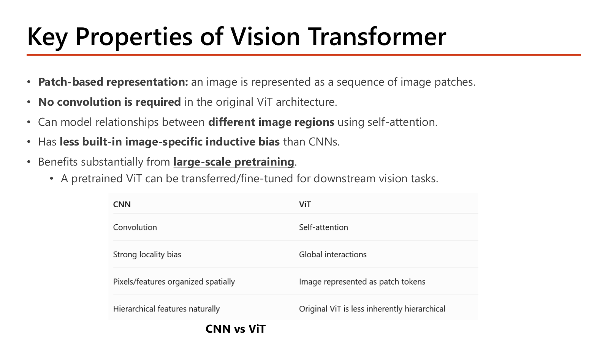
ห้องเรียน 196 คน ถ้าทุกคนคุยกับทุกคนจะวุ่นวาย แบ่งเป็นกลุ่มละ 49 คนคุยกันในกลุ่ม คาบถัดไปสลับกลุ่มครึ่งหนึ่ง ข่าวก็ยังกระจายไปทั้งห้องได้
ปัญหาของ ViT สองข้อ: global self-attention แพงขึ้นเร็วเมื่อ patch เพิ่ม และ ViT มี feature ขนาดเดียว ต่างจาก CNN ที่เป็นหลายระดับ ซึ่งงาน object detection และ segmentation ต้องการ Swin มาจาก Shifted Window คำนวณ self-attention ภายใน window เล็ก เลื่อน window ระหว่าง layer และสร้าง feature map หลายระดับ
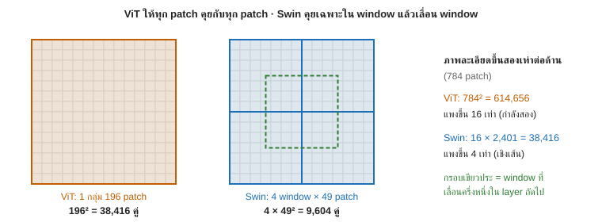
ซ้ายคือ ViT ทั้ง 196 patch อยู่กลุ่มเดียว ขวาคือ Swin 4 window ละ 49 patch กรอบประคือ window ใน layer ถัดไปที่เลื่อนครึ่งหนึ่ง patch ที่เคยอยู่ต่าง window ได้มาอยู่ด้วยกัน
N คือจำนวน patch M คือจำนวน patch ต่อ window ViT โตกำลังสองของ N Swin โตเชิงเส้น
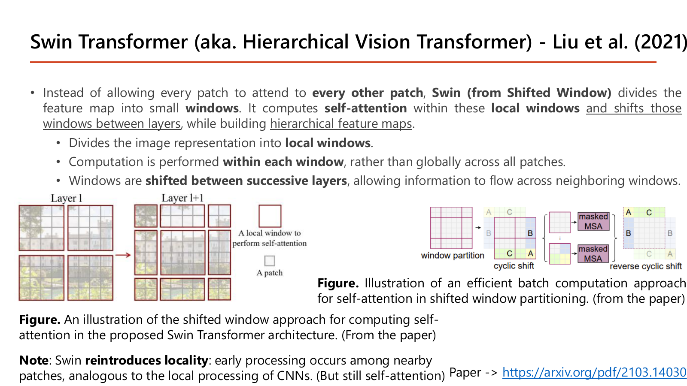
196 patch: ViT 38,416 คู่ · Swin 4 × 49² = 9,604 คู่ ถูกกว่า 4 เท่า · ภาพละเอียดขึ้นสองเท่าต่อด้านได้ 784 patch: ViT 614,656 แพงขึ้น 16 เท่า · Swin 16 × 2,401 = 38,416 แพงขึ้นแค่ 4 เท่า
Swin-T มีสี่ stage ยิ่งลึก ตำแหน่งยิ่งน้อยแต่ feature ระดับสูงขึ้น ได้ feature map หลายระดับแบบ CNN ใช้เป็น backbone ทั่วไปของ classification, detection และ segmentation
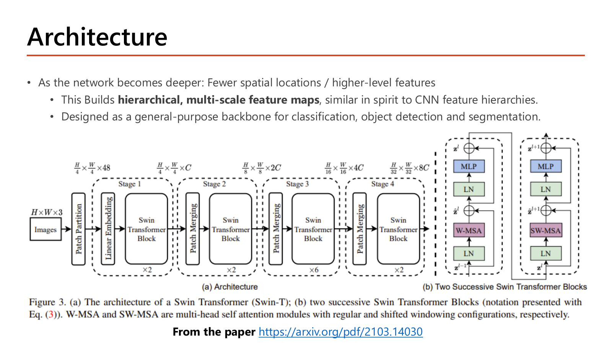
ภาพ 224×224 patch 4×4 มี 4·4·3 = 48 ค่า · stage 1: 56×56×96 · stage 2 ผ่าน Patch Merging: 28×28×192 · stage 3: 14×14×384 · stage 4: 7×7×768 · กว้างลดครึ่ง channel เพิ่มเท่าตัว แบบเดียวกับ VGG · Patch Merging ทำหน้าที่แทน pooling · บล็อกสลับ W-MSA กับ SW-MSA จำนวนบล็อกต่อ stage จึงเป็นเลขคู่ 2, 2, 6, 2
| CNN | ViT | Swin | |
|---|---|---|---|
| หน่วยพื้นฐาน | pixel, feature | patch token | patch token |
| operation หลัก | convolution | self-attention | window self-attention |
| ประมวลผลช่วงต้น | local | global | local window |
| ความสัมพันธ์ไกล | ค่อยๆ สร้าง | global ตรงๆ | ค่อยๆ ผ่าน shifted window |
| hierarchical, multi-scale | ✓ | ไม่มีในรุ่นดั้งเดิม | ✓ |
| downsampling | pooling, stride | — | Patch Merging |
| ภาพความละเอียดสูง | ดี | global attention แพง | ออกแบบให้ scale ได้ |
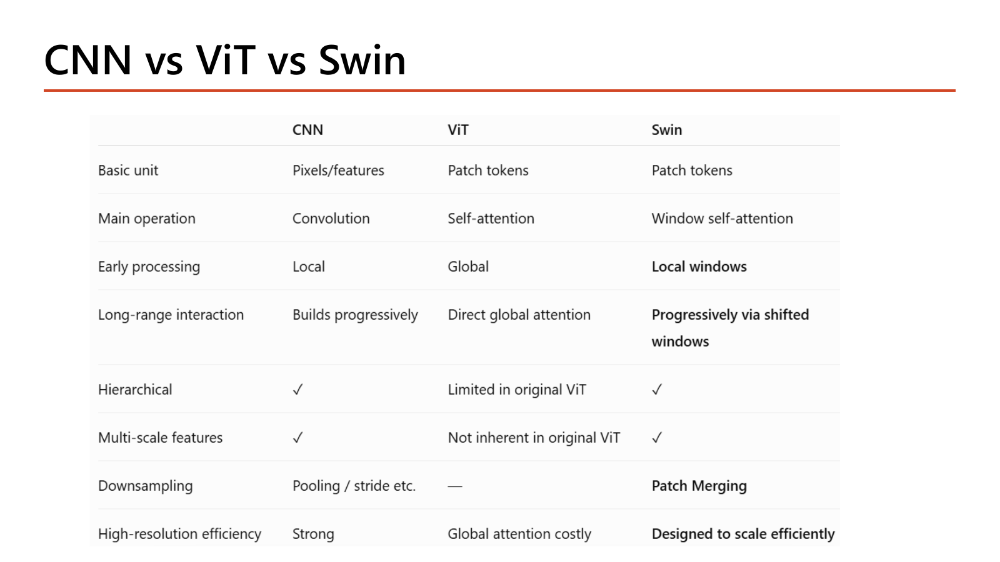
อ่านตารางตามคอลัมน์: Swin ใช้หน่วยพื้นฐานแบบ ViT แต่แถวที่เหลือเหมือน CNN Swin คือ Transformer ที่เอาข้อดีเชิงโครงสร้างของ CNN กลับมา
Swin ไม่ได้กลับไปใช้ convolution ยังเป็น self-attention แค่จำกัดใน window · ConvNeXt คือ CNN ล้วนที่ได้แรงบันดาลใจจาก Transformer ไม่ใช่ Transformer
224/32 = 7 ได้ 7 × 7 = 49 patch · 49² = 2,401 คู่
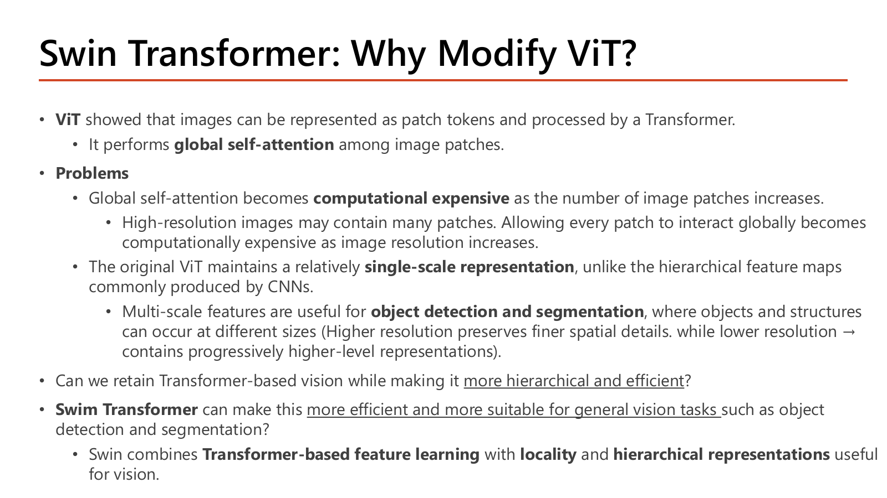
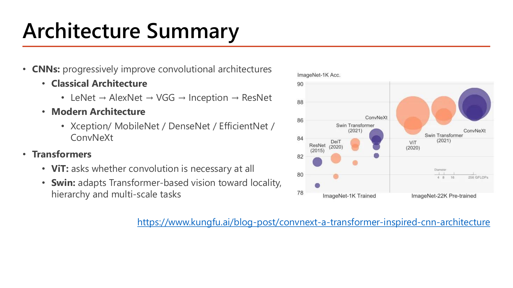
สไลด์สรุปท้ายบทแบ่งสองสาย: CNN ปรับทีละขั้นจาก LeNet ถึง ResNet แล้วต่อด้วย Xception, MobileNet, DenseNet, EfficientNet, ConvNeXt · Transformer เริ่มที่ ViT ถามว่า convolution จำเป็นไหม แล้ว Swin พาไปสู่ locality และ hierarchy กราฟ ImageNet-1K บนสไลด์: รุ่นที่เทรนบน ImageNet-1K อยู่ช่วง 78–84% รุ่นที่ pretrain บน ImageNet-22K ขึ้นไป 85–88% และ ConvNeXt ยังแข่งได้
ลองฝึกต่อในแบบฝึก Lesson 8 หรืออ่านต่อ Lesson 9 — Functional API และ Object Detection
| หน้า | เนื้อหา | อยู่ในตอน |
|---|---|---|
| 1 | ปก Part 3 | etc — ปก |
| 2–6 | Evolution, ILSVRC, LeNet-5, AlexNet, AlexNet key takeaways | ตอน 1 |
| 7–12 | VGGNet, Inception, naive inception cost, GoogLeNet | ตอน 2 |
| 13–16 | ResNet, ResNet architecture, key takeaways, comparison | ตอน 3 |
| 17–20 | Modern CNNs, Xception, other architectures, architecture design | ตอน 4 |
| 21–29 | Transfer learning, approaches, guidelines, Dog-Cat สามแนวทาง | ตอน 5 |
| 30–37 | ViT, key properties, Swin, Swin-T, CNN vs ViT vs Swin, summary | ตอน 6 |
ตัวเลข parameter, ขนาด output และจำนวนการคูณทุกตัวคำนวณซ้ำด้วย Python แล้ว ค่าที่สไลด์พิมพ์ผิดมีหน้า 10 ค่าเดียว